1 Introduction to statistical analysis
Kachigan (1986) defines statistical analysis as the process of data
Collection,
Organization, and
Interpretation.
In this course we will use the framework above and focus on aspects of collection (experimental design and random sampling), organization (using descriptive and inferential approaches), and interpretation.
One of the primary facets of quantitative analysis is the need to be creative in your approaches - the methods outlined in this class provide the foundation for analysis but the practitioner is encouraged to explore the methods and practices in their discipline to best address the needs for interpretation.
It is my sincere hope that the aspects of collection, organization, and interpretation of data that are presented in this class provide the foundation you will need to establish statistical expertise in your own scientific practice.
One of the features of statistical analysis that I would like to highlight: Every problem, every research approach, will require consideration of the means of collection, processing of data, and statistical analysis.
2 Data organization and best practices
Broman and Woo (2018) highlight the challenges and best practices for using spreadsheets. The design principles that they outline are useful for your work in MS Excel as well as a variety of specialized statistical programs (i.e. Matlab, R, and many others).
Spreadsheets continue to to be a primary way for data storage, analysis, and visualization.
Multipurpose (positive and negative).
Can be error prone to make large sweeping changes - hard to retrace your steps.
Organization is critical for reproducible research and archiving. A common scenario in your scientific practice is to have multiple time-sensitive projects occurring simultaneously, organization is critical.
2.1 Consistency and conventions
Use consistent codes for categorical variables.
Use a consistent fixed code for any missing values (e.g. ‘NA’ or an unfilled cell).
Use consistent variable names (these are column names).
Use a consistent data layout in multiple files (same column names). This allows data to be merged in a seamless way. So, each sheet will use similar naming conventions.
Use a consistent format for all dates (e.g. YMD, DMY).
Use consistent phrases in your notes. Notes are data. So, treating these as variables that have a binary, nominal, or ordinal value will allow you to treat these them quantitatively.
Be careful about extra spaces within cells. Again, MS Excel will read these as character codes that must be post-processed for analysis.
One variable is recorded in each cell (remember, in our scheme, a comment is a variables).
Strive for a rectangular data layout.
Avoid font and cell colors as annotation
Use .csv or some other file back up.
2.2 Data Managment (Adapted from Malin Pinsky at Rutgers University)
Keep lab notebooks to record what you did, learned, or produced each day. Can be physical notebooks, text files, Evernote, Jupyter notebooks, etc.
Establish mechanisms that facilitate collaboration and sharing.
Given the resources available here it is sensible to work directly in the cloud (Dropbox, OneDrive)
Use descriptive (non-ambiguous) file names
Keep raw (unprocessed, un-formatted) data in a file and associated directory that is not overwritten. Instead, processing should be performed on this data and saved in an appropriately named file.
If we ‘clean’ the data, we often use a folder called something like “data-raw” and a folder called “data-clean” to differentiate data in its original form from data that has been manipulated. Have “master” or “original” and “tidy” versions of files and name them appropriately.
Store raw data with metadata describing the contents of the file (i.e. what do the columns mean, how was the data collected, etc.)
If using data downloaded from another data source, we often have a folder called “data_dl” for ‘downloaded data’. Include the data source in a README file for reproducibility (this is like meta data and provides useful description).
3 Types of Variables
Properties and characteristics of an object that can assume two or more different values are called variables. These are the values that comprise our data.
We need to understand the structure of variables - different types of measurements will require different methods of analysis.
The next step after data collection is to organize the data into a meaningful form so that patterns and contrasts can be seen easily.
One of the common methods for organizing univariate data is to construct frequency distributions either in a table or as a figure. The frequency distribution is an organized representation of the number of observations in each category on the scale of measurement. These allow researchers to have a glance at the entire data conveniently.
It shows whether the observations are high or low and also whether they are concentrated in one area or spread out across the entire scale.
3.1 Categorical Variables
Entities are divided into distinct categories.
3.1.1 Binary variable
There are only two categories, e.g.
dead or alive,
present or absent,
positive or negative (e.g. for a disease),
the value of some quantity of interest is zero or positive,
or the value of some quantity of interest exceeds some threshold value.
3.1.2 Nominal variable
There are more than two categories, e.g.
Whether the subject is an omnivore, vegetarian, vegan, or carnivore.
The subject’s taxonomic group,
3.1.3 Ordinal variable
Similar to a nominal variable but the categories are ordered.
Whether people got a fail, a pass, a merit or a distinction in their exam.
Intensity of infection (e.g. none, mild, moderate, severe)
3.1.4 Frequency Distribution of a Categorical Variable
- A tally of how frequently occurring a value is among categories.

3.2 Continuous Variables
Equal intervals on the variable represent equal differences in the property being measured, e.g.
the difference between 6 and 8 is equivalent to the difference between 13 and 15,
Density or frequency of organisms in a transect or at a sampling station,
Body Mass Index or some measure of condition of an organism.
3.2.1 Frequency Distribution of a Continuous Variable
A question often asked: What interval to choose? Your knowledge of the domain will guide this. The width of the class can be determined by dividing the range of observations by the number of classes.
The following are some guidelines regarding class widths:
1.) It is advisable to have equal class widths. Unequal class widths should be used only when large gaps exist in data.
2.) The class intervals should be mutually exclusive and nonoverlapping.
3.) Open-ended classes at the lower and upper side (e.g., <10, >100) should be avoided.
Determination of the Amount of Phosphorous in Leaves: A Frequency Table of Continuous Data
| Phosphorous concentration | Frequency |
|---|---|
| 8.1 to 8.2 | 2 |
| 8.2 to 8.3 | 6 |
| 8.3 to 8.4 | 8 |
| 8.4 to 8.5 | 11 |
| 8.5 to 8.6 | 17 |
| 8.6 to 8.7 | 17 |
| 8.7 to 8.8 | 24 |
| 8.8 to 8.9 | 18 |
| 8.9 to 9.0 | 13 |
| 9.0 to 9.1 | 10 |
| 9.1 to 9.2 | 4 |
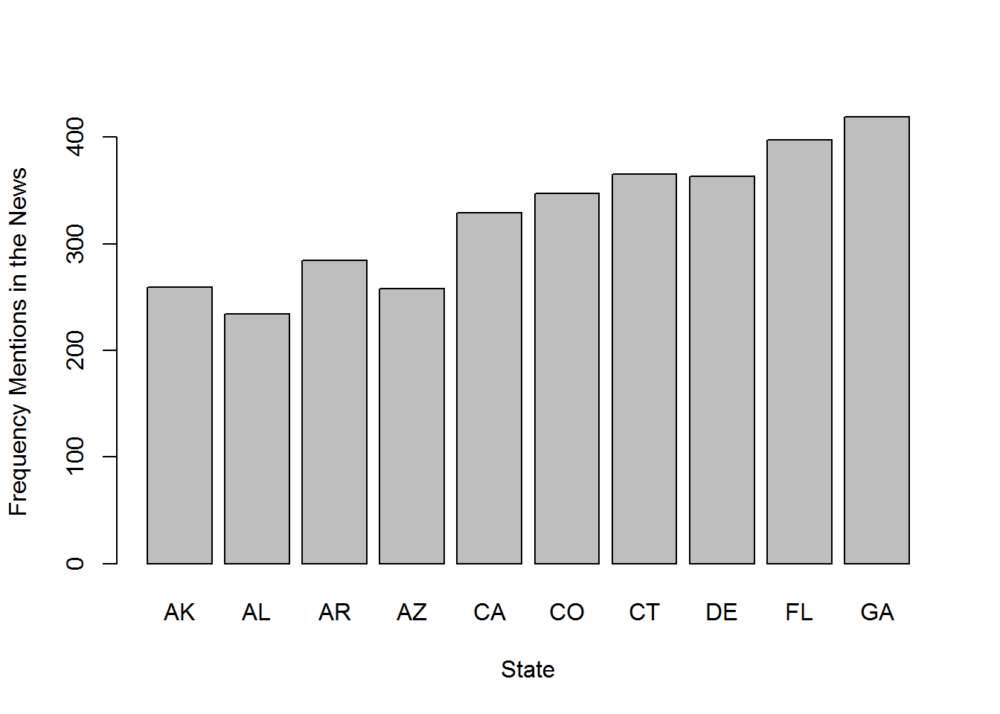
3.3 Cumulative Distribution of a Continuous Variable
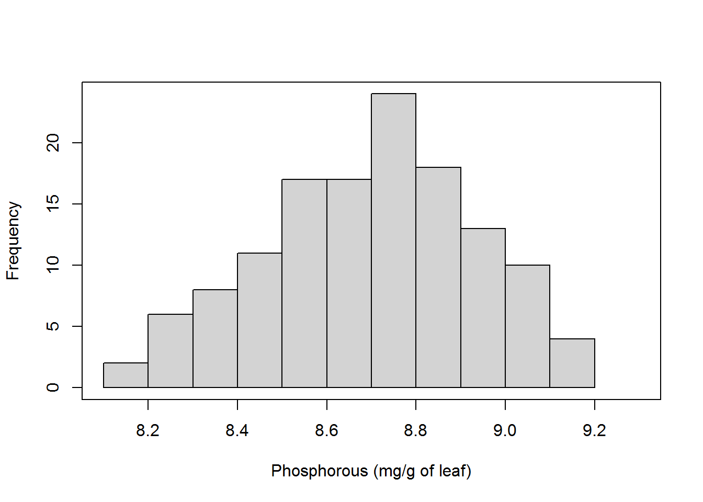
Determination of the Amount of Phosphorous in Leaves: A Frequency Table of Continuous Data
| Cummulative Frequency | |||
|---|---|---|---|
| Phosphorous concentration | Frequency | Starting with Low Values | Starting with High Values |
| 8.15 to 8.25 | 2 | 2 | 130 |
| 8.25 to 8.35 | 6 | 8 | 128 |
| 8.35 to 8.45 | 8 | 16 | 122 |
| 8.45 to 8.55 | 11 | 27 | 114 |
| 8.55 to 8.65 | 17 | 44 | 130 |
| 8.65 to 8.75 | 17 | 61 | 86 |
| 8.75 to 8.85 | 24 | 85 | 69 |
| 8.85 to 8.95 | 18 | 103 | 45 |
| 8.95 to 9.05 | 13 | 116 | 27 |
| 9.05 to 9.15 | 10 | 126 | 14 |
| 9.15 to 9.25 | 4 | 130 | 4 |
Total frequency = 130 = n
3.3.1 Skew and Kurtosis of a Continuous Variable
- A left-skewed distribution has a long left tail.
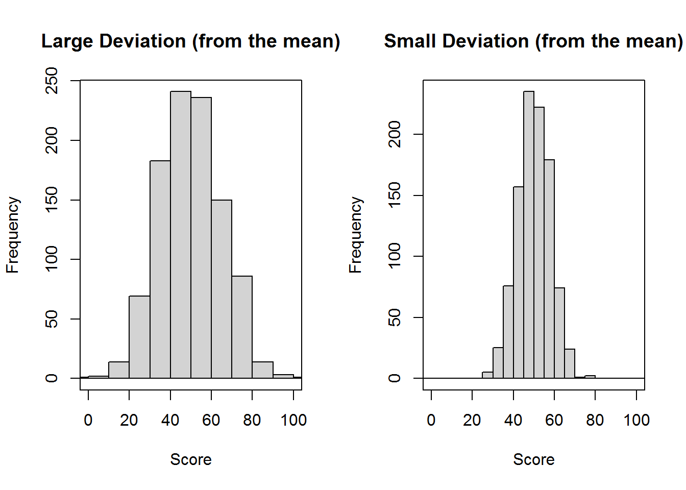
- A right-skewed distribution has a long right tail. 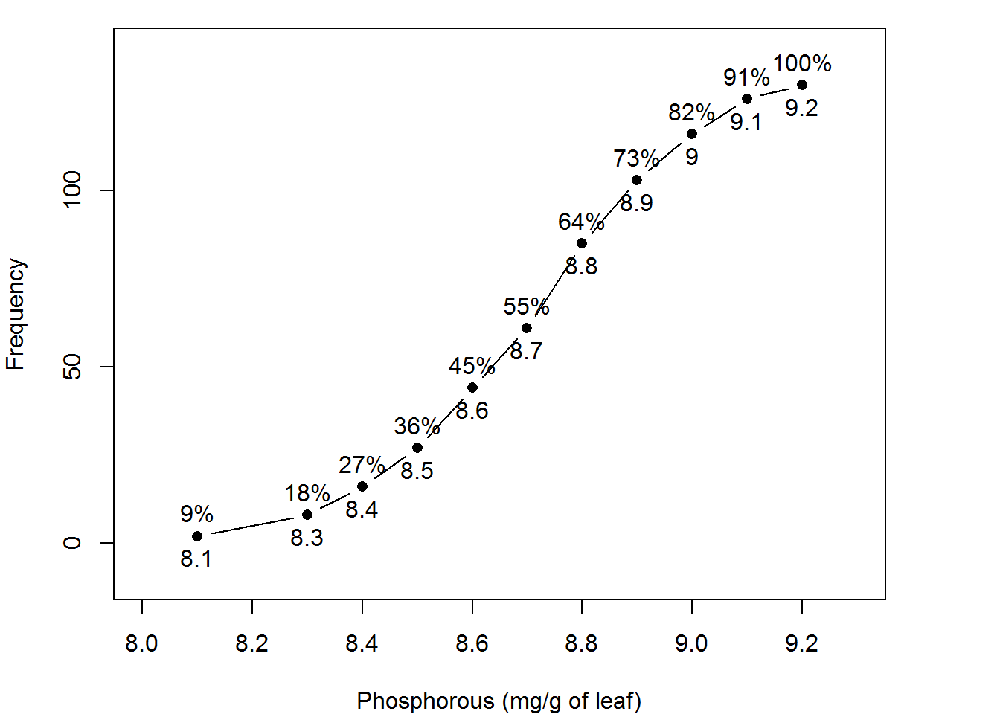
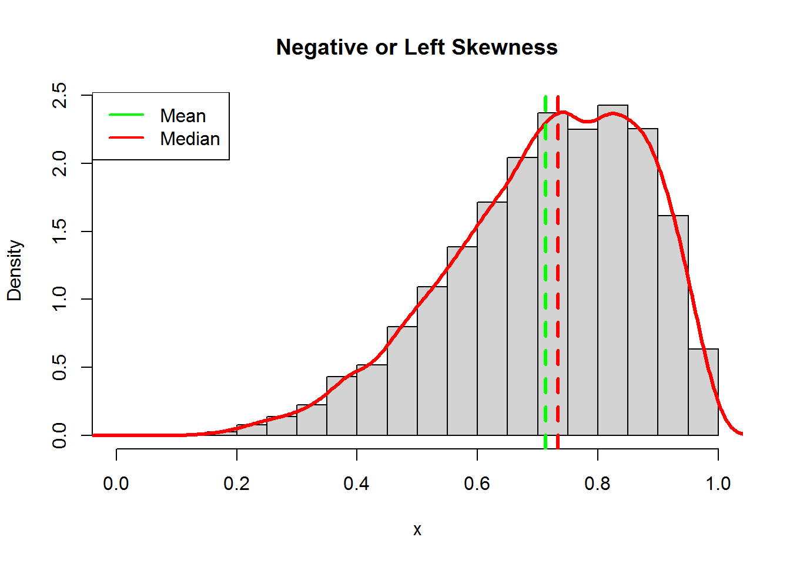
3.3.2 Frequency Polygon of a Continuous Variable
A frequency polygon is constructed by connecting all midpoints of the top of the bars in a histogram by a straight line without displaying the bars.
A frequency polygon aids in the easy comparison of two frequency distributions.
When the total frequency is large and the class intervals are narrow, the frequency polygon becomes a smooth curve known as the frequency curve.
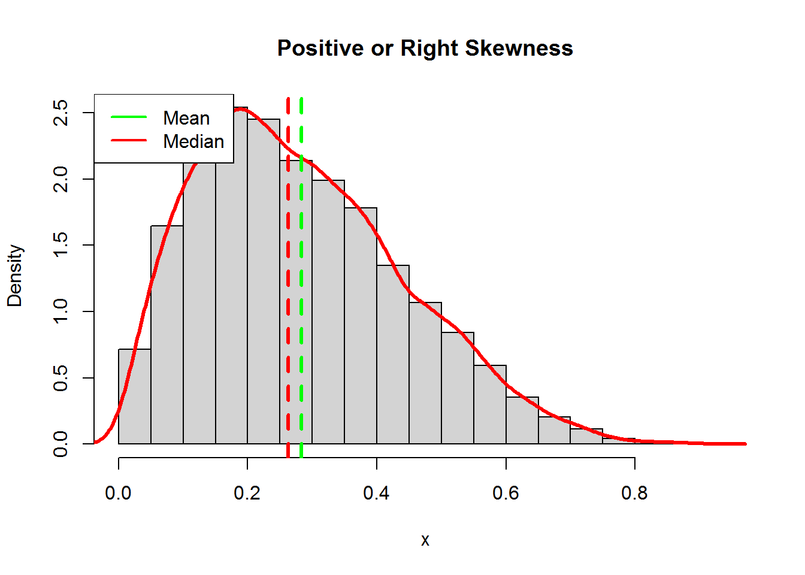
3.3.3 Box and Whisker Plot of a Continuous Variable
This graph, first described by Tukey in 1977, can also be used to illustrate the distribution of data. There is a vertical or horizontal rectangle (box), the ends of which correspond to the upper and lower quartiles (75th and 25th percentile, respectively).
Hence the middle 50% of observations are represented by the box.
The length of the box indicates the variability of the data. The line inside the box denotes the median (sometimes marked as a plus sign).
The position of the median indicates whether the data are skewed or not. If the median is closer to the upper quartile, then they are negatively skewed and if it is near the lower quartile, then positively skewed.
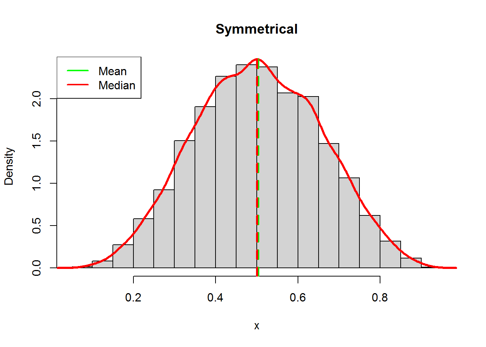
3.3.4 Violin Plots
Violin plots are an alternative to box plots that solves the issues regarding displaying the underlying distribution of the observations, as these plots show a kernel density estimate of the data.
same summary statistics as box plots:
the white dot represents the median.
the thick gray bar in the center represents the interquartile range.
the thin gray line represents the rest of the distribution, except for points that are determined to be “outliers” using a method that is a function of the interquartile range.
On each side of the gray line is a kernel density estimation to show the distribution shape of the data. Wider sections of the violin plot represent a higher probability that members of the population will take on the given value; the skinnier sections represent a lower probability.
## Warning: package 'vioplot' was built under R version 4.0.5
3.4 Descriptive Statistics of Continuous Frequency Distributions
3.4.1 Range
The smallest score subtracted from the largest score in the observation, e.g.
- Number of friends of 11 Facebook users.
- 22, 40, 53, 57, 93, 98, 103, 108, 116, 121, 252
- Range = 252 - 22 = 230
3.4.2 The Interquartile Range
Identify the values that split the sorted data into four equal parts.
First or lower quartile (the range values of the first 25% of values in ordered sequence)
Second quartile (the range values of the first 25 to 50% of values in ordered sequence)
Third quartile (the range values of the first 50 to 75% of values in ordered sequence)
Fourth quartile (the range values of the first 75 to 100% of values in ordered sequence)
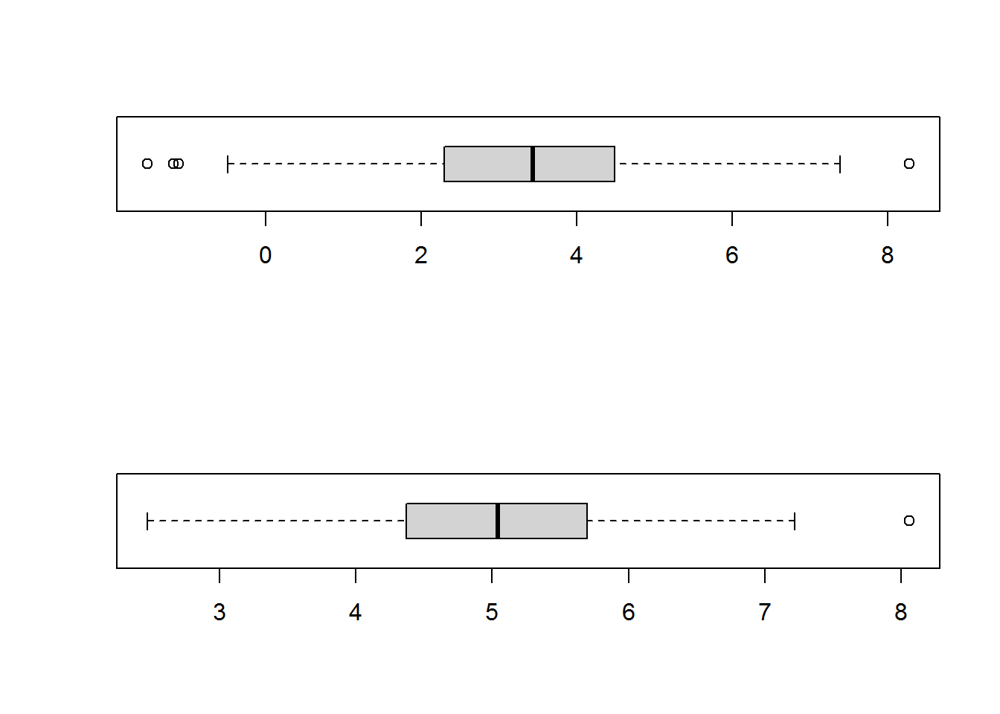
3.4.3 Measures of central tendency
The mode is the most frequently occurring value in the population or sample.
The median is the 50th percentile in the ordered data.
The mean (much more about this below).
4 The Normal Distribution
- The normal distribution is probably the most common distribution in all of probability and statistics.
- One of the main reasons it crops up so much is due to the Central Limit Theorem (we will explore this).
4.1 The Normal Probability Density Function
The probability density function for the normal distribution is defined as:
\(y_i = \frac{1}{\sigma\sqrt2\pi}e^{-(X_i-\mu)^2/2\sigma^2}\)
We can think of the model in this way (mathematical approach):
\(f(X) = \frac{1}{\sigma\sqrt2\pi}e^{-(X_i-\mu)^2/2\sigma^2}\)
Where the parameters (the symbols ) represent the mean, \(\mu\) (the point on the x-axis where the center of the distribution is) and the standard deviation, \(\sigma\) (how spread out the distribution is) of the population.
- What are some of the general characteristics of this model? Can you describe its shape?
- What are the parameters of the model? These are the quantities we will estimate in the fitting process.
- What are the variables used in the model? These are the observations.
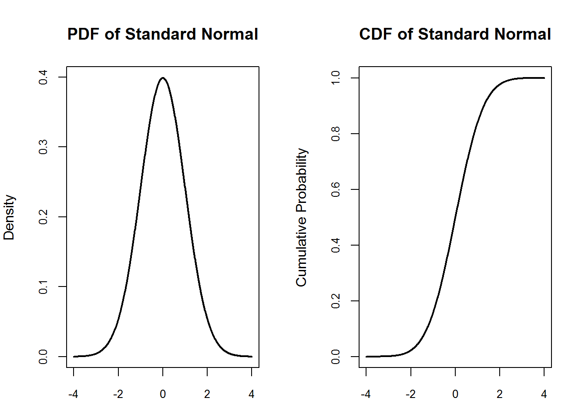
Below, two distributions are plotted from the ‘Standard Normal Distribution’, in this formulation:
\({\sigma=1}\) and \({\mu=0}\).
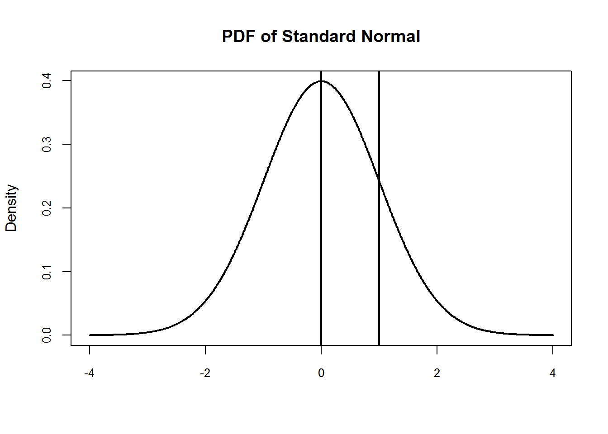
The normal distribution is an example of a continuous univariate probability distribution with infinite support. By infinite support, we mean that we can calculate values of the probability density function for all outcomes between \(-\infty\) and \(+\infty\).
The output of a probability density function is not a probability value.
To get the probability from a probability density function we need to find the area under the curve. So from our example distribution with mean = 0 and standard deviation = 1, we can find the probability that the outcome is between 0 and 1 by finding the area shown in the image below.
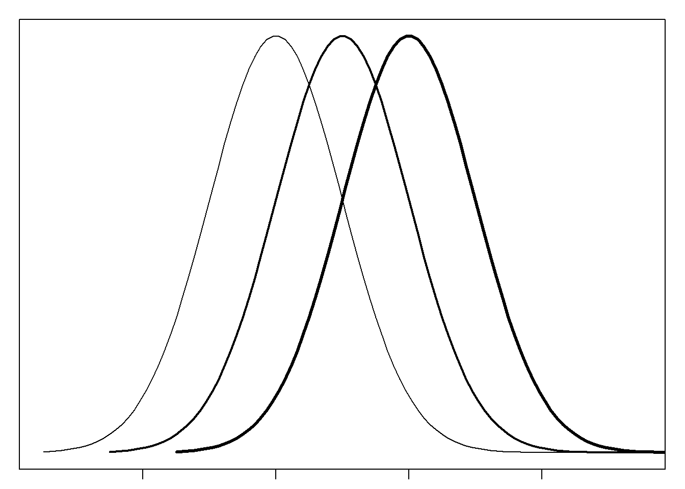
We can read this as “the integral of the probability density function between 0 and 1 (on the left-hand side) is equal to the probability that the outcome of the random variable is between zero and 1 (on the right-hand side)”.
We can cover all possible values if we set our range from ‘minus infinity’ all the way to ‘positive infinity’. Therefore the following has to be true for the function to be a probability density function:
One last thing here: The probability of the random variable being equal to a specific outcome is 0, because the integral over x values of x to x is equal to zero.
4.2 Z-scores
Z-scores are a way to center and scale the observations.
\(Z_i = \frac{X_i-\bar{X}}{sd}\)
- Standardizing a score with respect to the other scores in the group.
- Expresses a score in terms of how many standard deviations it is away from the mean.
- Converts a distribution to a z-score distribution.
- Z-scores have mean = 0 and standard deviation = 1.
## mean sd
## 1 -0.217 1.004| Obs | Centered Obs (difference between the value and the mean) | Scaled Centered Obs (Centered value divided by standard deviation, Z-score) | Prob (obs < Z) | 1-Prob (Obs > Z) |
|---|---|---|---|---|
| 0.599 | 0.816 | 0.813 | 0.792 | 0.208 |
| -0.926 | -0.709 | -0.706 | 0.240 | 0.760 |
| -2.051 | -1.834 | -1.827 | 0.034 | 0.966 |
| 0.261 | 0.478 | 0.476 | 0.683 | 0.317 |
| -0.715 | -0.498 | -0.496 | 0.310 | 0.690 |
| 0.484 | 0.700 | 0.698 | 0.757 | 0.243 |
| 0.425 | 0.642 | 0.640 | 0.739 | 0.261 |
| 1.352 | 1.569 | 1.563 | 0.941 | 0.059 |
| -0.896 | -0.679 | -0.676 | 0.249 | 0.751 |
| -0.702 | -0.485 | -0.483 | 0.314 | 0.686 |
4.2.1 Properties of Z-scores - Quantiles
1.96 definesthe top 2.5% of the distribution.
-1.96 defines the bottom 2.5% of the distribution.
As such, 95% of z-scores lie between -1.96 and 1.96.
99% of z-scores lie between -2.58 and 2.58.
99.9% of them lie between -3.29 and 3.29.
Let’s look at a Z Table
4.2.2 Areas under the Normal Curve for different quantile values
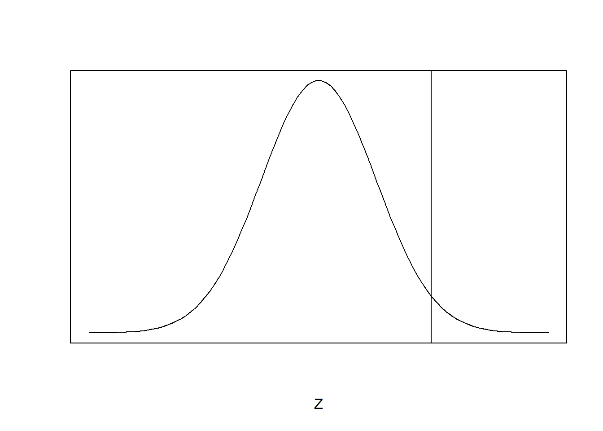
5 Model Fitting
The normal distribution is our first statistical model.
The mean is the hypothetical value of the most common outcome. However, it is not a perfect representation of the characteristics of the data. The Standard Deviation is the measure of dispersion (precision).
So, we will be fitting observations to understand how well the mean represents reality.
5.1 The Objective Function
The residuals for a particular model:
\(outcome = model + error\)
\(error_i = observation_i - expected_i\)
To ‘thread the model through the middle of the noise’, we want the magnitudes of all residuals to be small. A reasonable way (not the only way) to achieve this is to define our objective function to minimize error.
5.2 Quantifying Error
A deviation is the difference between the mean (expected) and the observed data (the outcome of the sample). The deviation of observed and expected value is called: the residual, error, or residual error
In the context of the normal distribution, we can calculate the deviations by calculating the difference between the observations and predictions.
When the normal fitting models:
\(deviation = X_i - \bar{X}\)
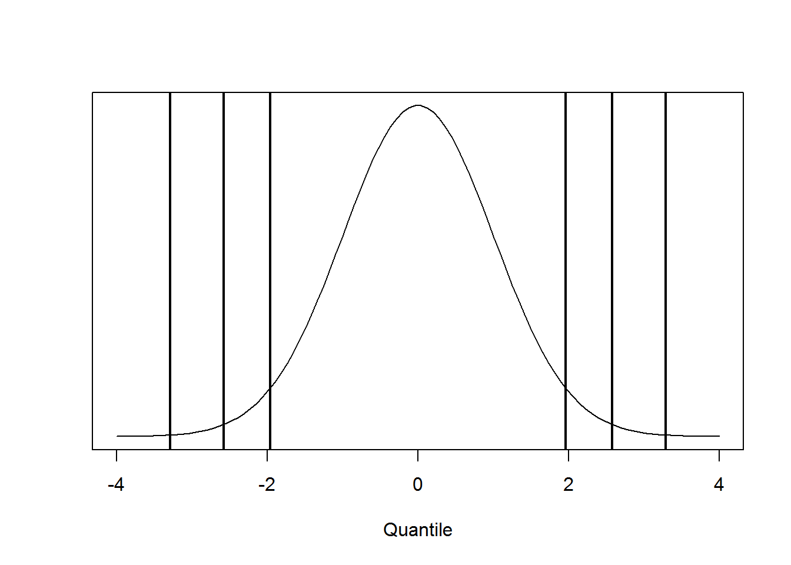
Should we use the Total Error as an estimate of uncertainty?
We could sum \(i^{th}\) error terms from 1 to n.
| i | Score | Score - mean(Score) |
|---|---|---|
| 1 | -0.28 | -0.795 |
| 2 | -0.14 | -0.655 |
| 3 | 1.04 | 0.525 |
| 4 | 0.65 | 0.135 |
| 5 | 0.26 | -0.255 |
| 6 | 1.56 | 1.045 |
\(\Sigma(X_i - \bar{X}) = 0\)
5.3 Sum of Squared Errors
We could add the deviations to find out the total error, but the deviations ‘cancel out’ (some are positive and others negative)
Therefore, we square each deviation. If we add these squared deviations we get the sum of squared errors (SS).
| i | Score | Deviation | Squared Deviation |
|---|---|---|---|
| 1 | -0.28 | -0.795 | 0.632 |
| 2 | -0.14 | -0.655 | 0.429 |
| 3 | 1.04 | 0.525 | 0.276 |
| 3 | 0.65 | 0.135 | 0.018 |
| 4 | 0.26 | -0.255 | 0.065 |
| 5 | 1.56 | 1.045 | 1.092 |
\(SS = \Sigma(X_i - \bar{X})^2 = 2.512\)
The sum of squares is a good measure of overall variability, but is dependent on the number of scores.
5.4 Let’s fit a model to some data using the sum of squares criteria:
Let’s look at data from 10 tree heights. We want to estimate the mean value. To do this we will plot the resulting \(SS\) (SS.est) resulting from changing the value of \(\bar{X}\).
The code and figure is a simulation that displays what happens to the SS as a result of trying to fit the normal model with different values of \(\bar{X}\).
Look at the curve. You will notice that the best estimate of \(\bar{X}\) is found when SS is minimized.
tree.ht <- c(2,4,9,3,5,1,2,12,8,10)
candidate.mean <- seq(min(tree.ht), max(tree.ht), length.out = 300)
SS.est <- c()
for (j in 1:length(candidate.mean))
SS.est[j] <- sum((tree.ht - candidate.mean[j])^2)
plot(candidate.mean, SS.est, type = 'n')
lines(candidate.mean, SS.est, lwd = 2 )
legend(legend = paste("Mean of tree height: ",round(mean(tree.ht),2)),'topleft',bty = 'n')
abline(v = mean(tree.ht), lwd = 2)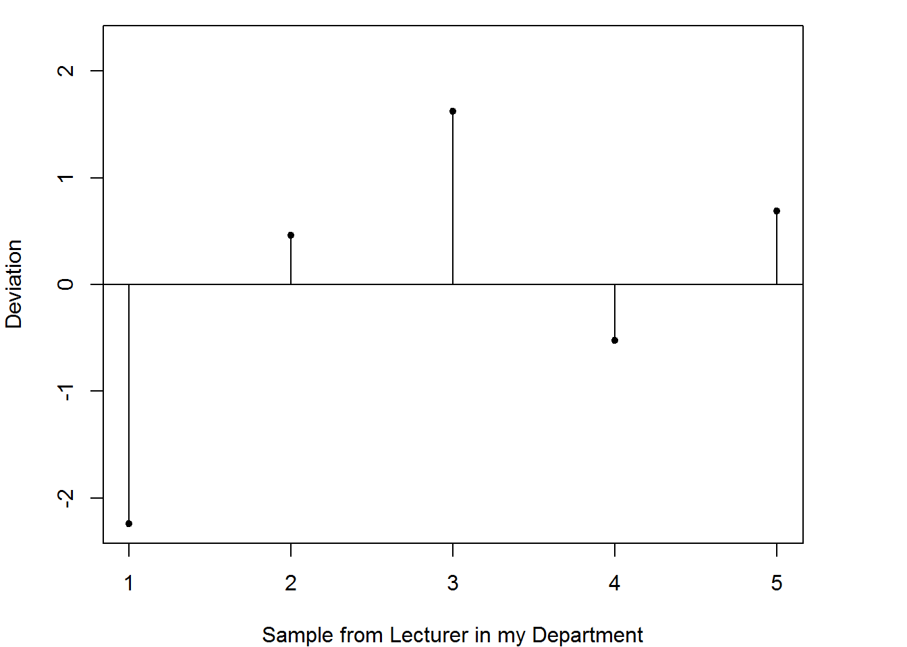
5.5 Variance
In statistics, when we talk about population, we mean the entire universe of possible values of a stochastic (random) variable. Population variance:
\(\sigma^2 = \frac{SS}{N} = \frac{\Sigma^n_{i=1}(X_i-\mu)^2}{N}\)
Most of the time, we don’t sample the entire population because it is too complex or simply not feasible. Think, for instance, at a problem when you want to analyze the heights of the oak trees in a forest. You can, of course, measure every single tree of the forest and so have collected statistics about the entire forest, but this could be very expensive and would take a very long time. So, we don’t generally know \(\mu\).
We calculate the average variability (average variability of each sample).
So, obtain a sample of, let’s say, 20 trees and try to relate sample statistics and population statistics.
Sample variance: \(s^2 = \frac{SS}{n-1} = \frac{\Sigma(X_i-\bar{X})^2}{n-1}\)
Why n-1 instead of N?
When we use N instead of n-1, we have an error called statistical bias, which means that the sample variance (the estimator) is systematically different from the true population parameter (in this case, the variance).
Let’s see an example:
Imagine a forest of 10,000 oak trees: This is the entire population. We want to estimate the distribution of heights.
Suppose we don’t know that the heights are normally distributed with an average of 10 m and a standard deviation (square root of variance) of 2 m. These are the statistical parameters of the entire population. We try to estimate these values through a sample of 20 random oak trees. We repeat the experiment 100 times.
Given that 20 samples are a tiny subset of 10,000 items of population, every time we sample the population, we get a different estimate of the sample variance and the population variance. On average (after taking many, many samples), we get a reasonable estimate of the standard deviation of the population.
5.6 Standard Deviation
The variance has one problem: it is measured in units2 (The original units, like the numbers are squared.).
This isn’t a very meaningful metric so we take the square root value.
This is the sample standard deviation (sd or s):
\(s = \sqrt\frac{\Sigma^n_{i=1}(X_i-\bar{X})^2}{n-1}\)
5.7 Summary of Variance Estimates
The sum of squares, variance, and standard deviation represent the same thing:
- The fit of the mean to the data, how well the mean represents the observed data
- The variability in the data when modeled using the mean
5.8 Central Limit Theorem (CLT)
The central limit theorem (CLT) states that the distribution of sample means approximates a normal distribution as the sample size becomes larger regardless of the population distribution shape.
The sample theory is the study of relationships existing between a population and samples drawn from population.
Consider all possible samples of size n that can be drawn from the population. For each sample, we can compute statistic like mean or a standard deviation, etc that will vary from sample to sample. This way we obtain a distribution called as the sampling distribution of a statistic. If the statisic is sample mean , then the distribution is called the sampling distribution of mean.
If we take many sets of samples from a population, and calculated the mean of these, we could plot the frequency distribution of the sample means.
This distribution is the ‘sampling distribution’ It:
1.) The sampling distribution from a normal distribution is normally-distributed.
2.) As sample size increases (to infinity), the sampling distribution, from any distribution, will approach a normal distribution.
3.) The expected value (the mean) of the sample distribution will be the mean of the population distribution.
5.9 Example of the CLT (1 of 2)
A fair die can be modelled with a discrete random variable with outcome 1 through 6, each with the equal probability of 1/6.
DieOutcome <- sample(1:6,10000, replace= TRUE)
hist(DieOutcome, col ="light blue")
abline(v=3.5, col = "red",lty=1)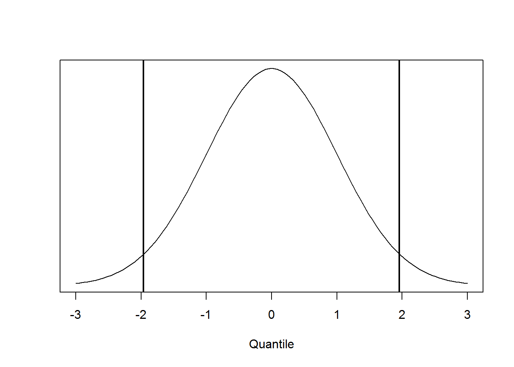
We will take samples of size 10 , from the above 10000 observation of outcome of die roll, take the arithmetic mean and try to plot the mean of sample. we will do this procedure k times (in this case k= 10000 )
x10 <- c()
k =10000
for ( i in 1:k) {
x10[i] = mean(sample(1:6,10, replace = TRUE))}
hist(x10, col ="pink", main="Sample size =10",xlab ="Outcome of die roll")
abline(v = mean(x10), col = "Red")
abline(v = 3.5, col = "blue")By theory , we know as the sample increases, we get better bell shaped curve. As the n apporaches infinity , we get a normal distribution. Lets do this by increasing the sample size to 30, 100 and 1000.
x30 <- c()
x100 <- c()
x1000 <- c()
k =10000
for ( i in 1:k){
x30[i] = mean(sample(1:6,30, replace = TRUE))
x100[i] = mean(sample(1:6,100, replace = TRUE))
x1000[i] = mean(sample(1:6,1000, replace = TRUE))
}
par(mfrow=c(1,3))
hist(x30, col ="green",main="n=30",xlab ="die roll")
abline(v = mean(x30), col = "blue")
hist(x100, col ="light blue", main="n=100",xlab ="die roll")
abline(v = mean(x100), col = "red")
hist(x1000, col ="orange",main="n=1000",xlab ="die roll")
abline(v = mean(x1000), col = "red")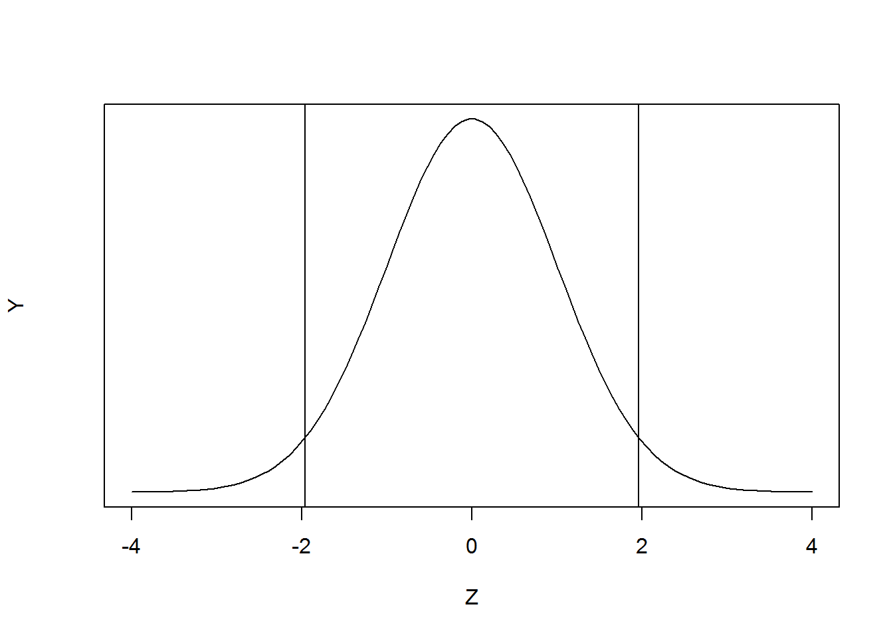
5.9.1 Example of the CLT (1 of 2)
Flipping a fair coin many times the probability of getting a given number of heads in a series of flips should follow a normal curve, with mean equal to half the total number of flips in each series. Here 1 represent heads and 0 tails.
x <- c()
k =10000
for ( i in 1:k) {
x[i] = mean(sample(0:1,100, replace = TRUE))}
hist(x, col ="light green", main="Sample size = 100",xlab ="flipping coin ")
abline(v = mean(x), col = "red")
6 Sampling and Parameter Estimation
6.1 Simple Random Samples
Every member of the population has an equal probability of being included in the sample.
Consider Exit polling vs. Twitter polls to estimate proportion voting for a candidate. Why does one provide a better estimate than another.
BTW, this is the primary issue with current political polling - the quest to get a representative sample (https://fivethirtyeight.com/features/is-the-polling-industry-in-stasis-or-in-crisis/)
Some language of sampling that is useful to review (or introduce):
- a population is the entire collection of people or things you are interested in (note a census is a measurement of all the units in the population);
- a sampling frame is the specific data from which the sample is drawn, e.g., a telephone book;
- a unit of analysis is the type of object of interest, e.g., arsons, fire departments, firefighters;
- a sample is a subset of some of the units in the population;
- a statistic is a number that results from measuring all the units in the sample;
Statistics derived from samples are used to estimate population parameters.
For example, to find out the average age of all motor vehicles in the state in 1997:
- Population = all motor vehicles in the state in 1997
- Sampling frame = all motor vehicles registered with the DMV on July 1, 1997
- Unit of analysis = motor vehicle
- Sample = 300 motor vehicles
- Statistic = the average age of the 300 motor vehicles in the sample
Simple random sample (SRS): Each unit in the population is identified, and each unit has an equal chance of being in the sample. The selection of each unit is independent of the selection of every other unit. Selection of one unit does not affect the chances of any other unit (Independence).
For example, to select a sample of 25 people who live in your college dorm, make a list of all the 250 people who live in the dorm.
Assign each person a unique number, between 1 and 250.
Then refer to a table of random numbers.
Starting at any point in the table, read across or down and note every number that falls between 1 and 250.
Use the numbers you have found to pull the names from the list that correspond to the 25 numbers you found.
These 25 people are your sample. This is called the table of random numbers method.
We (I) spend considerable effort to discuss SRS because it is the way to obtain statistically valid data.
Only statistically valid data that can be used for analysis - the first assumption of parametric statistics.
We will generally make an inspection of the data and/or the residuals to ensure that they are normally distributed (The second assumption)
If we are examining and doing statistical tests among or between groups then the variances of each group must be equal. The third assumption.
Ensuring that data are collected in a random fashion allows statistics to be calculated. Non-random data collection disallows this.
Independence is also a critical aspect of sampling - the sampling of one element will not impact or predict the value of another element.
6.2 Hurlburt (1984)
Now that we know what constitutes a valid sample, lets look at some ways (and some ways not) to collect samples.
Hurlburt’s paper has been instrumental in promoting an understanding of pseudoreplication and the term has become widely used. Ecologists have become more aware of the need for close concordance of design, analysis, and interpretation of experiments.
“No one would now dream of testing the response to a treatment by comparing two plots, one treated and the other control.” Fisher and Wishart (1930).
Hurlburt evaluated the frequency of pseudoreplication as a fatal flaw of experiments
Hurlbert(1984) Ecological Monographs 54:187‐211
Evaluated 176 studies from 1960 to 1984.
Found 27% overall or 48% of those making statistical inferences used “pseudoreplication”.
The term pseudoreplication was coined by Hurlbert to refer to "the use of inferential statistics to test for treatment effects with data from experiments where either treatments are not replicated (though samples may be) or replicates are not statistically independent.“
The context of his paper was ecological field experiments, but pseudoreplication can occur in other contexts as well.
6.2.1 Types of Experiments
Manipulative Experiments have the features
- Control
- Randomization
- Replication
What is the other class of experiments that Hurlburt discusses?
6.2.2 Sample allocation
Statisticians emphasize importance of randomization
Hurlbert’s concern is with randomization methods not always giving good interspersion of treatments (spatial and temporal)
6.2.3 What is Pseudoreplication?
Replication refers to having more than one experimental (or observational) unit with the same treatment.
Each unit with the same treatment is called a replicate.
Most models for statistical inference require true replication.
True replicates are often confused with repeated measures or with pseudoreplicates.
6.2.4 Examples of Pseudoreplication
Suppose a blood-pressure lowering drug is administered to a patient, then the patient’s blood pressure is measured twice. This is a repeated measure, not a replication. It can give information about the uncertainty in the measurement process, but not about the variability in the effect of the drug. On the other hand, if the drug were administered to two patients, and each patient’s blood pressure was measured once, we can say the treatment has been replicated, and the replication may give some information about the variability in the effect of the drug.
A researcher is studying the effect on plant growth of different concentrations of CO2 in the air. He needs to grow the plants in a growth chamber so that the CO2 concentration can be controlled. He has access to only two growth chambers, but each one will hold five plants. However, since the five plants in each chamber share whatever conditions are in that chamber besides the CO2 concentration, and in fact may also influence each other, they are not independent replicates but are pseudoreplicates. The growth chambers are the experimental units; the treatments are applied to the growth chambers, not to the plant independently.
Two fifth-grade math curricula are being studied. Two schools have agreed to participate in the study. One is randomly chosen to use curriculum A, the other to use curriculum B. At the end of the school year, the fifth-grade students in each school are tested and the results are used to do a statistical analysis comparing the two curricula. There is no true replication in this study; the students are pseudo-replicates. The schools are the experimental units; they, not the students, are randomly assigned to treatment. Within each school, the test results (and the learning) of the students in the experiment are not independent; they are influenced by the teacher and other school-specific factors (e.g., previous teachers and learning, socioeconomic background of the school, etc.).
6.3 Stratified Random Sampling
The way in which was have selected sample units thus far has required us to know little about the population of interest in advance of selecting the sample.
This approach is ideal only if the characteristic of interest is distributed homogeneously across the population.
If, however, the characteristic is distributed heterogeneously, then estimates based on these designs will be imprecise relative to several alternative sampling designs.
For example, if we have information that we know to be associated with the heterogeneity in the population, we can use that ancillary information to guide alternative strategies for selecting samples that will yield estimates with higher precision that a simple random sample for the same amount of effort. The first of these designs is stratified random sampling.
A stratified random sample is one obtained by dividing the population elements into mutually exclusive, non-overlapping groups of sample units called strata, then selecting a simple random sample from within each stratum (stratum is singular for strata).
Stratifying involves classifying sampling units of the population into relatively homogeneous groups before (usually) selecting sample units. Strata are based on information other than the characteristic being measured that is known to or thought to vary with the characteristic of interest.
Because virtually all ecological systems are heterogeneous, stratifying is used commonly as a way to increase precision in ecological studies. Common strata in ecological studies include elevation, aspect, or other geographic features for studying plant communities and vegetation communities or soils for studying some animal communities. When choosing among several potential strata, seek strata that best minimize variation in the characteristic of interest within strata and that maximize variation among strata.
How it is implemented: * Divide the entire population into non-overlapping strata * Select a simple random sample from within each strata
L = number of strata \(n_i\) = number of sample units within stratum i n = number of sample units in the population
Estimates from stratified random samples are simply the weighted average or the sum of estimates from a series of simple random samples, each generated within a unique stratum.
\(\bar{X} = \frac{1}{n}\sum_{i = 1}^{L}n_{i}\bar{X}_i\)
\(s^2 = \frac{1}{n^2}\sum_{i = 1}^{L}n_i^2(\frac{n - n_i}{n})(\frac{s_i^2}{n_i})\)
6.3.1 Allocating Sampling Effort among Strata
Using stratified random sampling requires that we decide how to divide a fixed amount of sampling effort among the different strata; that process is called allocation. When deciding where to allocate sampling effort, the question becomes how best to allocate effort among strata so that the sampling process will provide the most efficient balance of effort, cost, and estimate precision.
Uniform Allocation
Allocation Proportional to Size or Variation
6.4 Parameter Estimates - Unbiased
Parameters are estimated quantities that could describe any number of population characteristics (the characteristics of variables).
We are generally focused on the mean and variance (however estimated parameters could be the mean, median, mode, proportion, total, etc.).
One aspect of parameter estimation is to get a point estimate, an approximation of the true value of the population parameter. However this estimated does not provide information about the precision of the estimate.
The best estimate of \(\mu\) is \(\bar{X}\).
The best estimate of \(\sigma\) is \(s\).
We strive for an unbiased estimate of population parameters: Unbiased means that the expected value is equal to the true value (accuracy)
6.5 Parameter Estimates - Efficient
The second property we want is to have parameters be efficient
This has to do with the relationship of variance to sample size and is concerned with understanding how does sampling impact the estimate - variance should be reduced when sampling is increased.
6.6 Interval Estimation
Reporting point estimates alone is unsatisfactory - we need an estimate of the variation.
We want to know how close the sample statistic is to the population parameter.
Interval estimation is concerned making statements saying how confident or certain we are that the populaiton parameter resides in an interval of values.
e.g. There is a 0.95 probability that the value of \(\mu\) resides between 6.2 and 9.7.
6.7 Confidence Interval
- Confidence intervals involve:
Identification of associated probability
Specification of the interval
So how do we determine confidence intervals in practice:
In the first case, let’s use or general equation for a statistical model:
Statistic = Parameter \(\pm\) Error (From Kachigan, p. 138)
Parameter = Statistic \(\pm\) Error
\(\mu = \bar{X} \pm Error\)
- We will never know the magnitude of the true error.
What we can understand is the combined effect of sampling and process error. so, we attach a probability that the error is a certain size. Now, we want to solve for the Statistic.
\(\bar{X} = \mu \pm Error\)
If we take an infinite number of samples from the population, we will get an estimate of the error term, \(\sigma\).
The error in sampling, from an infinite number of samples, is equal to the variation in the sample means, the standard distribution (sd) equals the standard error of the mean.
So this takes us back to our Z-score:
What is the z value in which 95% of the values are under the curve?
Let’s look at a Z Table
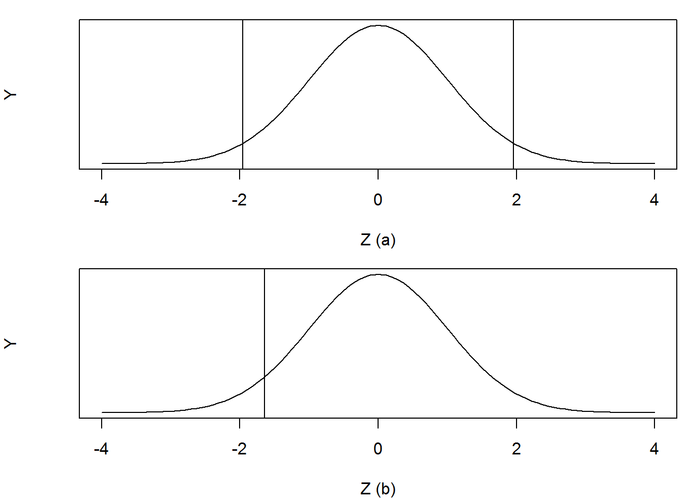
\(\mu = \bar{X} \pm 1.96\sigma\) (95% Certainty)
\(\mu = \bar{X} \pm ? \sigma\) (99% Certainty)
- The above presumes that we have a very good knowledge of the population parameter \(\sigma\), which is generally not the case. We do not sample populations and infinite number of times.
6.8 Confidence Intervals of the Mean from samples - using the t-distribution
The determination of the sampling interval from populations with unknown \(\sigma\) we will use our best estimate of \(\sigma\), which is s.
Similarly, we will use the t distribution to model the variability, you will see that it is flatter and has larger tails - what does this mean to our estimate of the confidence interval?
The t distribution is a one parameter distribution, df is the parameter and it controls the shape of the distribution. The model is platykurtic at small sample sizes.
df is n - 1.
To model the confidence interval we assume that the distribution of the variables are normally distributed.
Allow us to determine the interval estimates of an estimated parameter, contingent on the values of estimates of parameters derived from sampling, in a probabilistic way.
Let’s look at a t Table
\(\mu = \bar{X} \pm t_{df}{s_{\bar{X}}}\) (95% Certainty, with n = 10?)
\(\mu = \bar{X} \pm t_{df}{s_{\bar{X}}}\) (99% Certainty, with n = 10?)
\(\mu = \bar{X} \pm t_{df}{s_{\bar{X}}}\) (99% Certainty, with n = 50?)
7 Hypothesis Testing and Power
7.1 Statistical Hypothesis Testing
Although thoroughly criticized, null hypothesis significance testing (NHST) remains the statistical method of choice used to provide evidence for an effect, in biological, biomedical and social sciences.
The approach plays into the primary method for making progress in science.
Observations -> Models -> Hypothesis -> Null Hypothesis -> Experiment
1.) Observations - make an observation of patterns in nature. These could be large in spatial or temporal scale, or small.
2.) Given the observation, construct a model. Models are a framework that provide an explanation about why the pattern(s) that you observe, exists.
3.) Hypotheses derive from models. What must be true for the model to have explanatory power (and thus be accurate)?
4.) Having established a prediction about what would happen under some experimental condition, it must be tested.
Inductive reasoning is used here: we can prove something to be true, instead, we can only disprove things. This is termed the falsificationist procedure.
5.) Perform the well-conducted experiment.
6.) Observe and interpret the outcome.
If you retain (fail to reject null Hypothesis) -> Make more observations and develop alternative models.
If you reject the null hypothesis -> Model is supported, does it support additional hypotheses that can be tested?
7.2 NHST
NHST is a method of statistical inference by which an experimental factor is tested against a hypothesis of no effect (the null hypothesis) or no relationship based on a given observation.
The first step is to state a testable hypothesis:
\(H_0\) Null hypothesis
\(H_A\) Alternative hypothesis
Declare \(\alpha\) level (this determines your quantile value)
t is recommended to set a level of significance (a theoretical p-value) that acts as a reference point to identify significant results, that is to identify results that differ from the null-hypothesis of no effect. This is the \(\alpha\) level.
Fisher recommended using \(\alpha =0.05\) to judge whether an effect is significant or not.
This alpha level is roughly two standard deviations away from the mean for the normal distribution.
‘The value for which p=.05, or 1 in 20, is 1.96 or nearly 2; it is convenient to take this point as a limit in judging whether a deviation is to be considered significant or not’).
How small the level of significance is, is left to researchers (domain knowledge).
Collect Data
Compare the test statistic to the critical value (determined by \(\alpha\))
State the resulting probability (the p-value)
The p-value is the probability of obtaining test results at least as extreme as the results actually observed.
The p-value is not an indication of the strength or magnitude of an effect.
A (small) p-value is not an indication favoring a given hypothesis.
The p-value is not the probability of the null hypothesis p(\(H_0\)), of being true.
State testable hypothesis
These are a set of mutually exclusive and exhaustive outcomes
The test statistic will support one or the other outcomes
\(H_0: \mu = 0\), \(H_A:\mu \ne 0\)
\(H_0: \mu = 3.5 cm\), \(H_A:\mu \ne 3.5 cm\)
\(H_0: \mu = 10.5 kg\), \(H_A:\mu \ne 10.5 kg\)
7.3 Example: Use Z-score to evaluate if it is likely that a given value of the distribution is the mean value
Is the mean fuel consumption of a population of buses equal to 20 mpg?
What is the null hypothesis?
We need information about the population (remember we are using Z-score so we know the population-level parameters \(\mu\) and \(\sigma\)).
Mean
Population standard deviation
Calculate Z-score for mean = 20 mpg
Determine the associated probability that the mean is 20 mpg given:
\(\sigma\) = 0.3, \(\mu\) = 19.1
7.4 Evaluate Z-score
What is the probability that we would get this Z-score?
Hypothetical Z-scores
par(mfrow = c(1,1)) # This tells R to put 1 row, 1 columns
plot(x = seq(-4,4, length.out = 100), y = dnorm(seq(-4,4,length.out = 100)), xlab = "Z", ylab = NA, type = "l", yaxt = 'n', xaxt = 'n')
abline(v = 1.96)| z | .00 | .01 | .02 | .03 | .04 | .05 | .06 | .07 | .08 | .09 |
|---|---|---|---|---|---|---|---|---|---|---|
| 0.0 | .5000 | .5040 | .5080 | .5120 | .5160 | .5199 | .5239 | .5279 | .5319 | .5359 |
| 0.1 | .5398 | .5438 | .5478 | .5517 | .5557 | .5596 | .5636 | .5675 | .5714 | .5753 |
| 0.2 | .5793 | .5832 | .5871 | .5910 | .5948 | .5987 | .6026 | .6064 | .6103 | .6141 |
| 0.3 | .6179 | .6217 | .6255 | .6293 | .6331 | .6368 | .6406 | .6443 | .6480 | .6517 |
| 0.4 | .6554 | .6591 | .6628 | .6664 | .6700 | .6736 | .6772 | .6808 | .6844 | .6879 |
| 0.5 | .6915 | .6950 | .6985 | .7019 | .7054 | .7088 | .7123 | .7157 | .7190 | .7224 |
| 0.6 | .7257 | .7291 | .7324 | .7357 | .7389 | .7422 | .7454 | .7486 | .7517 | .7549 |
| 0.7 | .7580 | .7611 | .7642 | .7673 | .7704 | .7734 | .7764 | .7794 | .7823 | .7852 |
| 0.8 | .7881 | .7910 | .7939 | .7967 | .7995 | .8023 | .8051 | .8078 | .8106 | .8133 |
par(mfrow = c(4,4)) # This tells R to put 1 row, 1 columns
par(mar = rep(0,4))
par(oma = rep(0,4))
for (j in 1:16) {
xp <- c(seq(-4,4,by = 0.01))
yp <- dnorm(xp)
plot(xp, yp, type = "l", yaxt = 'n', xaxt = 'n',xlab ="",ylab = "")
xp <- c(seq(-4,seq(0,1.99,length.out = 16)[j],by = 0.1))
yp <- c(dnorm(xp), rep(0,c(length(xp))))
xp <- c(xp, rev(xp))
polygon(x = xp, y = yp, col = 'steelblue')
legend("topleft",
paste0('z =',round(max(xp),2)),
bty = 'n')
legend("topright",
paste0('Area =',round(pnorm(max(xp)),2)),
bty = 'n')
abline(v = 0, lwd = 2)
}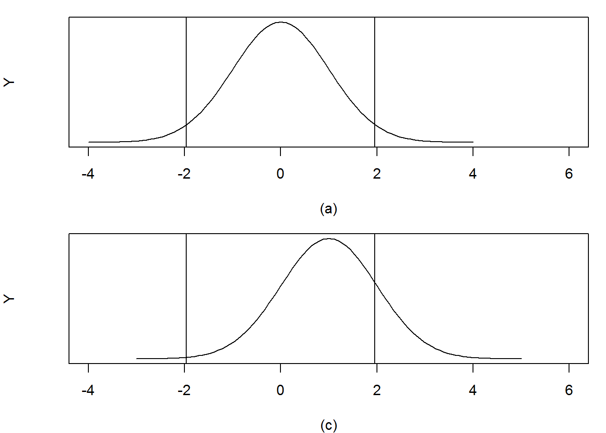
7.5 Is it meaningful?
Declare \(\alpha\)
- Given our \(\alpha\) level, how does the resulting probability compare?
- Remember, \(\alpha\) is defined prior to statistical testing
- Two tail and one tail test
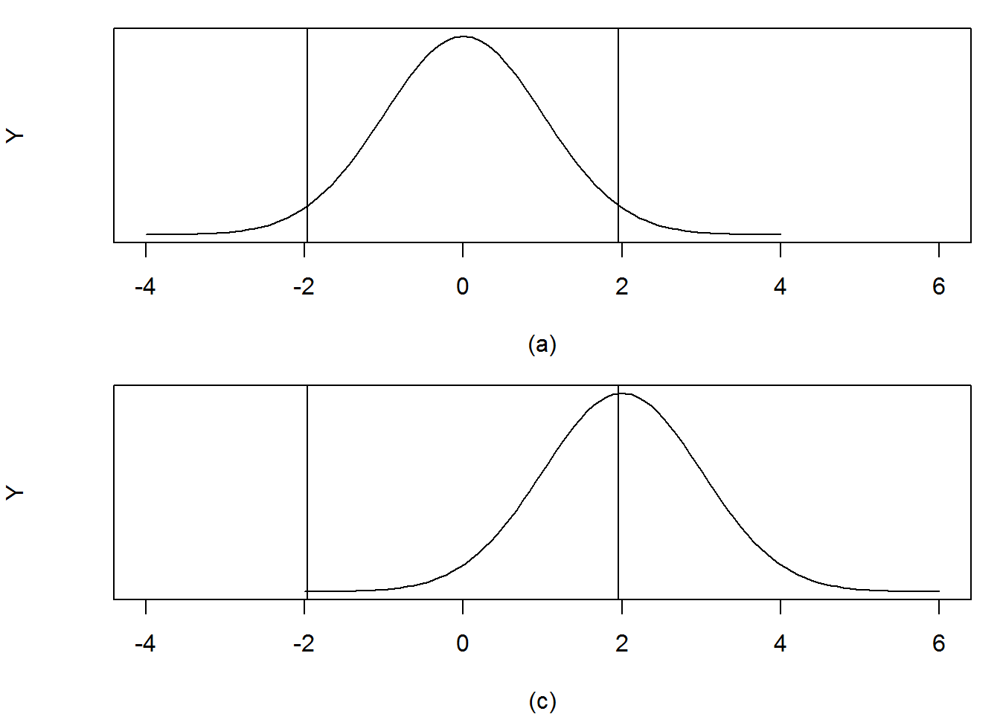
7.6 Statistical Hypothesis Testing
Evaluate if the population mean is not significantly different from some specified value.
\(H_0\): \(\mu\) = 0
\(H_A: \mu \ne 0\)
Introduce the idea of a critical value (critical quantile)
- \(\alpha\) of 0.05
We have data taken from the weight change in horses given some medical treatment.
We are interested to know if the mean change in weight that we found +1.29 kg is significantly different from 0 kg.
- We calculate the Z-score and find that Z = 1.45
\(P(mean \ge 1.29) = P(Z \ge 1.45) = ?\)
\(P(mean \le 1.29) = P(Z \le 1.45) = ?\)
Z = 1.96 is the rejection region at 2.5%
- This is the ‘region of rejection’
Now we have a way to objectively reject or accept the null hypothesis.
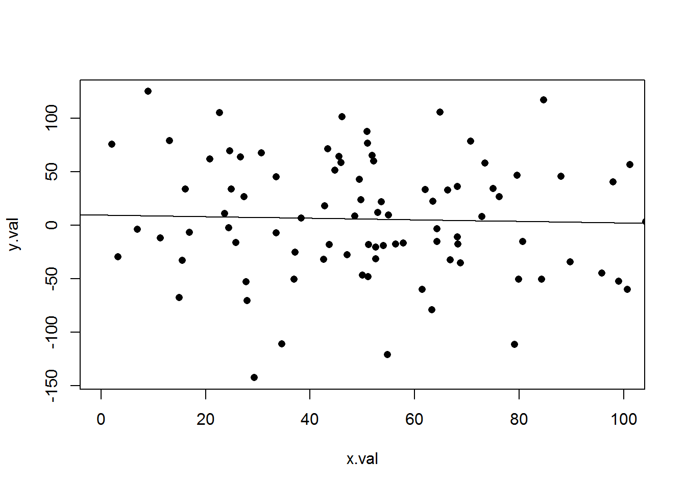
7.6.1 One- and Two-Tailed Tests
Alternative to testing ‘is the value different.’
In some cases we care about the direction of the difference (is the value less than or greater than some value).
Use one-tailed test
- In general, one-tailed hypotheses about a mean are:
- \(H_0:\mu\ge\mu_0\) and \(H_A:\mu<\mu_0\)
- In which case, H0 is rejected if the test statistic is in the left-hand tail of the distribution or:
- \(H_0:\mu\le\mu_0\) and \(H_A:\mu>\mu_0\)
Contrast the region of rejection for these.
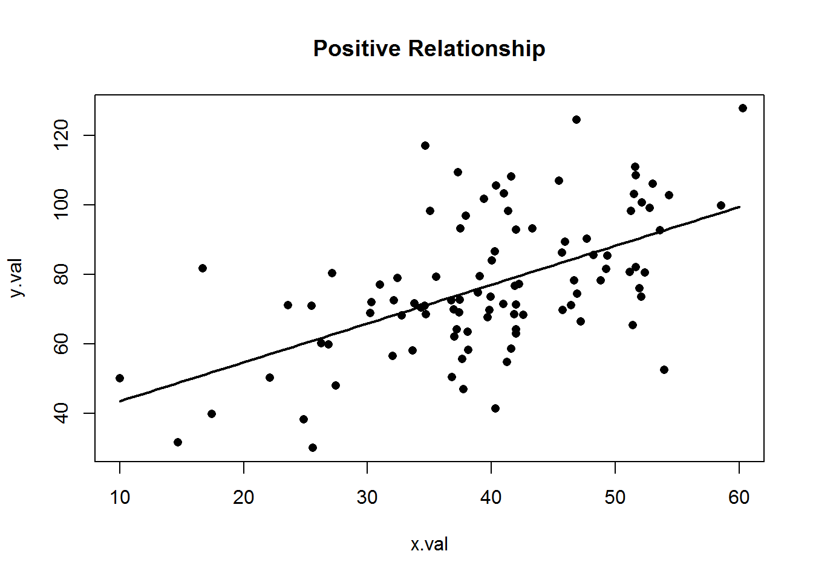
7.7 Type-1 and Type-2 Errors
Sometimes we:
- Reject the null hypothesis when it is true.
- Accept the alternative hypothesis when it is false.
Type 1 error or alpha error - frequency of rejecting \(H_0\) when it is true.
Type 1 error rate is equal to \(\alpha\).
Type 1 error: “rejecting the null hypothesis when it is true.” We rejected the null hypothesis but did so erroneously.
Type 1 error is termed ‘\(\alpha\) error’ because it is equal to \(\alpha\)
Now we have some criteria to choose alpha.
So if your \(\alpha\), or critical value is 0.10 we have a 10% probability of rejecting the null hypothesis when we should have, in fact, accepted it.
7.7.1 Type 1 (\(\alpha\)) Error
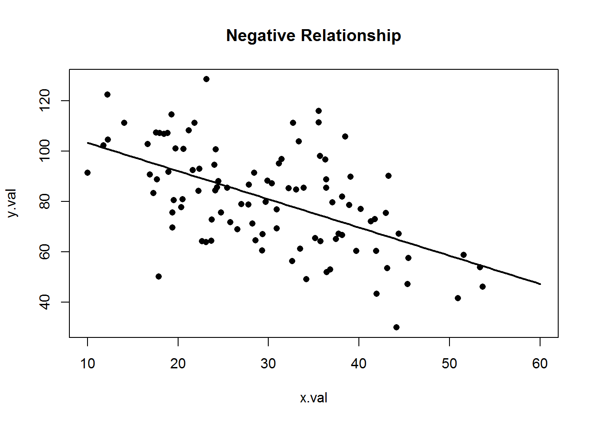
Type 2 error: “accepting the null hypothesis when it is false.”
Type 2 error or ‘\(\beta\) error’ is equal to \(\beta\).
| If H0 is true | If H0 is false | |
|---|---|---|
| If H0 is rejected | Type I error | No error |
| If H0 is not rejected | No error | Type II error |
Table 4.8.1: Two Types of Errors in Hypothesis Testing
Thought experiments:
- Ex. Endangered species conservation
- Ex. Pharmaceutical testing
| If H0 is true | If H0 is false | |
|---|---|---|
| If H0 is rejected | \(\alpha\) | \(1-\beta\) (“power”) No error |
| If H0 is not rejected | No error \(1-\alpha\) | \(\beta\) |
Table 4.8.2: Long-term Probabilities of Outcomes in Hypothesis Testing
7.7.2 Statistical Power
Power: the probability that a statistical test will reject a null hypothesis when it is false (proper rejection).
There are multiple ways to interpret power correctly:
Power is the probability of rejecting the null hypothesis when, in fact, it is false.
Power is the probability of making a correct decision (to reject the null hypothesis) when the null hypothesis is false.
Power is the probability that a test of significance will pick up on an effect that is present.
Power is the probability that a test of significance will detect a deviation from the null hypothesis, should such a deviation exist.
Power is the probability of avoiding a Type II error.
Power is 1 – \(\beta\).
The power of a hypothesis test is between 0 and 1;
If the power is close to 1, the hypothesis test is very good at detecting a false null hypothesis.
Beta is commonly set at 0.2, but may be set by the researchers to be smaller. Consequently, power may be as low as 0.8, but may be higher. Powers lower than 0.8, while not impossible, would typically be considered too low for most areas of research.
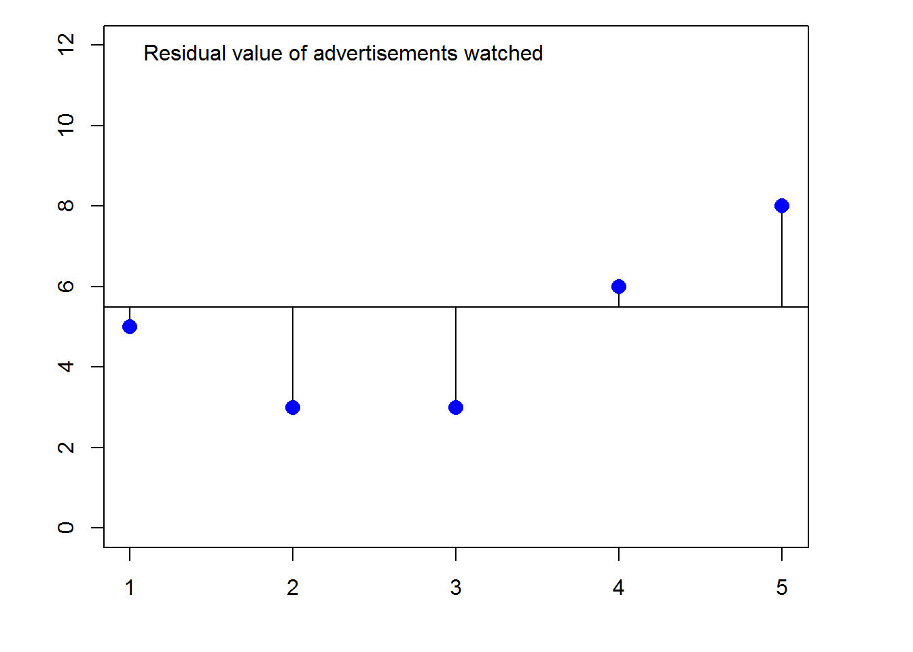
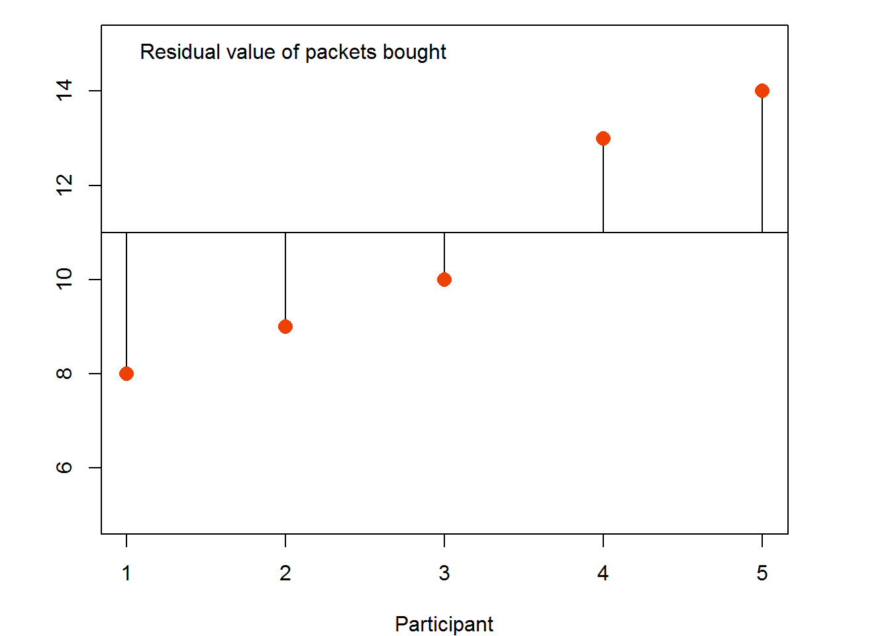
7.7.3 Leaf’s power simulation in R
7.7.4 What Influences Statistical Power?
These are listed in Zar, we can take them step by step to learn why power is influenced.
Significance level (or alpha)
Sample Size
Power depends on sample size. Other things being equal, larger sample size yields higher power.
- Variance
Power also depends on variance: smaller variance yields higher power.
- Experimental Design
Power can sometimes be increased by adopting a different experimental design that has lower error variance. For example, stratified sampling can reduce error variance and hence increase power. However,
The power calculation will depend on the experimental design.
The statistical analysis will depend on the experimental design.
- Magnitude of the effect of the variable.
8 Parameteric and Non-Parameteric Correlation
8.1 Correlation
We often have information on two numeric characteristics for each member of a group and are interested in finding the degree of association between these characteristics.
For instance, an obstetrician may decide to look up the records of women who delivered in her hospital in the previous year to find out whether there is a relationship between their family incomes and the birth weights of their babies.
The relationship here means whether the two variables fluctuate together, i.e., does thebirth weight increase (or decrease) as the income increases.
Parametric approaches
- Pearson’s correlation coefficient
Nonparametric approaches
- Spearman’s rho
- Kendall’s tau
8.2 Interpreting correlations
8.2.1 Positive Relationship
##
## Attaching package: 'MASS'## The following object is masked from 'package:sm':
##
## muscle
8.2.2 Negative Relationship

8.2.3 No Relationship

8.3 Quantifying the magnitude of correlation
As one variable increases, does the other increase, decrease or not change at all (stay the same)?
This can be done by understood by calculating the covariance.
We look at how much each score deviates from their respective mean values.
If both variables deviate from the mean in a similar way, they are likely to be related (or ‘covary’).
Here is the results (bivariate) of an experiment aimed at understanding the efficacy of advertising:
| Participant number (i) | 1 | 2 | 3 | 4 | 5 | Mean | SD |
|---|---|---|---|---|---|---|---|
| Adverts Watched (X) | 5 | 4 | 4 | 6 | 8 | 5.4 | 1.67 |
| Packets Bought (Y) | 8 | 9 | 10 | 13 | 15 | 11 | 2.92 |
Residual error values:
Remember residuals are the value of the observation - expectation.
| Participant number (i) | 1 | 2 | 3 | 4 | 5 | Mean | SD |
|---|---|---|---|---|---|---|---|
| Adverts Watched | 5 | 4 | 4 | 6 | 8 | 5.4 | 1.67 |
| Packets Bought | 8 | 9 | 10 | 13 | 15 | 11 | 2.92 |
| Advertiser Residual | -0.4 | -1.4 | -1.4 | 0.6 | 2.6 | ||
| Packets residual | -3 | -2 | -1 | 2 | 4 |


8.4 Covariance and a re-examination of variance
Remember the variance tells us how much scores deviate from the mean for a single variable.
It is closely linked to the sum of squares, indeed we use the sum of squares to calculate the variance.
Covariance is similar - it tells is by how much scores on two variables differ from their respective means.
\(s^2=\frac{\Sigma(X_i - \bar{X})}{n-1}^2\)
\(s^2=\frac{\Sigma(X_i - \bar{X})(X_i - \bar{X})}{n-1}\)
8.5 Here we are examining the ‘covariance’ so the calculation changes a bit.
Calculate the error (residual value) between the mean and each subject’s score for the first variable (X).
Calculate the error (residual value) between the mean and their score for the second variable (y).
Multiply the error values (the residual values).
Add these values and you get the cross product deviations.
The covariance is the mean (average) of the cross-product deviations:
\(cov(X,Y)=\frac{\Sigma(X_i - \bar{X})(Y_i - \bar{Y})}{n-1}\)
From our example, and plugging in the values:
\(cov(X,Y)=\frac{(-0.4)(-3)+(-1.4)(-2)+(-1.4)(-1)+(0.6)(2)+(2.6)(4)}{4}\)
\(cov(X,Y)=\frac{1.2+2.8+1.4+1.2+10.4}{4}\)
\(cov(X,Y)=\frac{17}{4}\)
\(cov(X,Y)=4.25\)
8.6 Limitations of Covariance
The magnitude of the covariance is dependent on the units of measurement.
e.g. the covariance of two variables measured in miles might be 4.25, but if the same scores are converted to kilometres, the covariance is changed…
To address this issue we can standarize the covariance value by standardization: Divide by the standard deviations of both variables. The standardized version of covariance is known as the correlation coefficient. It is unaffected by units of measurement.
8.7 The Correlation Coefficient
\(r=\frac{cov_{X,Y}}{s_Xs_Y}\)
\(r=\frac{\Sigma(X_i - \bar{X})(Y_i - \bar{Y})}{(n-1)s_Xs_Y}\)
\(r=\frac{cov_{XY}}{s_Xs_Y}\)
\(r=\frac{4.25}{1.67 * 2.92}\)
\(r=0.87\)
Termed Pearson-product moment correlation coefficient
It ranges between -1 and +1
- A value of zero, indicates that there is no relationship
It is a testable hypothesis
Testing \(H_0: \rho=0\) versus \(H_A: \rho\ne0\)
The standard error of the correlation coefficient is calculated as:
\(S_r=\sqrt\frac{1-r^2}{n-2}\)
It is a testable hypothesis
r = 0.870
n = 12 (new data set, with more samples)
We will calculate the critical value:
\(t=\frac{r}{S_r}= \frac{0.870}{0.156}= 5.58\)
t0.05(2),10 =2.228
Testing \(H_0: \rho=0\) versus \(H_A: \rho\ne0\)
Coefficient of determination, r^2
- By squaring the value of r you get the proportion of variance in one variable shared by the other.
Square of correlation coefficient (\(r^2\)), known as coefficient of determination, represents the proportion of variation in one variable that is accounted for by the variation in the other variable.
For example, if height and weight of a group of persons have a correlation coefficient of (\(\rho = 0.80\)), one can estimate that 64% (0.80 × 0.80 = 0.64) of variation in their weights is accounted for by the variation in their heights.
8.8 Non-parametric Correlation
Spearman’s rho \(\rho\)
- Pearson’s correlation on the ranked data
Kendall’s tau (\(\tau\))
- “Better” than Spearman’s for small samples
8.9 Spearman Rank Correlation Coefficient
d is the difference between two numbers in each pair of ranks
n = number of pairs of data
\(r=1-(\frac{6\Sigma d^2}{n(n^2 - 1)})\)
| Data 1 | Data 2 |
|---|---|
| 6 | 2 |
| 4 | 9 |
| 7 | 3 |
| Data 1 | Data 2 | Rank 1 | Rank 2 | d | d2 |
|---|---|---|---|---|---|
| 6 | 2 | 2 | 1 | ||
| 4 | 9 | 1 | 3 | ||
| 7 | 3 | 3 | 2 |
| Data 1 | Data 2 | Rank 1 | Rank 2 | d | d2 |
|---|---|---|---|---|---|
| 6 | 2 | 2 | 1 | 1 | 1 |
| 4 | 9 | 1 | 3 | 2 | 4 |
| 7 | 3 | 3 | 2 | 1 | 1 |
\(r=1-(\frac{6\Sigma d^2}{n(n^2 - 1)})\)
\(=1-(\frac{6*6}{3(3^2 - 1)})\)
We can use this value as the calculated r value
The critical value is a two tailed value with n